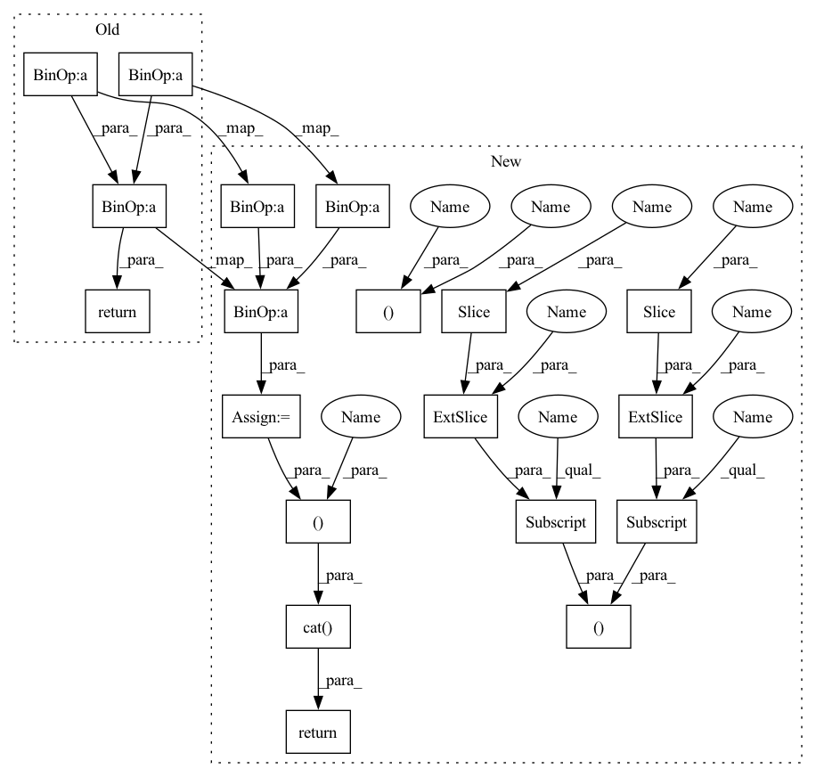

Pattern ID :35253
Before Change
return torch.cat((-x2, x1), dim = -2)
def apply_rotary_pos_emb(t, freqs):
return (t * freqs.cos()) + (rotate_half(t) * freqs.sin())
After Change
def apply_rotary_pos_emb(t, freqs):
rot_dim = freqs.shape[-2]
t , t_pass = t[..., :rot_dim, :], t[..., rot_dim:, :]
t = (t * freqs.cos()) + (rotate_half(t) * freqs.sin())
return torch.cat( (t, t_pass ), dim = -2)
In pattern: SUPERPATTERN
Frequency: 3
Non-data size: 19
Instances Fragment ID: 100304170
Project Name: lucidrains/se3-transformer-pytorch
Commit Name: d73d49946156b5a0d5a7b1314d6ed9238349f087
Time: 2021-05-13
Author: lucidrains@gmail.com
File Name: se3_transformer_pytorch/rotary.py
M Class Name: AnonimousClass
N Class Name: AnonimousClass
M Method Name: apply_rotary_pos_emb(2)
N Method Name: apply_rotary_pos_emb(2)
M Parent Class:
N Parent Class:
M File Name: se3_transformer_pytorch/rotary.py
N File Name: se3_transformer_pytorch/rotary.py
M Start Line: 22
M End Line: 22
N Start Line: 21
N End Line: 24
Before Change
def apply_rotary_pos_emb(t, freqs):
seq_len = t.shape[-2]
freqs = freqs[:, :, :seq_len]
return (t * freqs.cos()) + (rotate_half(t) * freqs.sin())
// feedforward
After Change
def apply_rotary_pos_emb(t, freqs):
seq_len, rot_dim = t.shape[-2], freqs.shape[-1]
freqs = freqs[..., :seq_len, :]
t, t_pass = t[..., :rot_dim], t[..., rot_dim:]
t = (t * freqs.cos()) + (rotate_half(t) * freqs.sin())
return torch.cat( (t, t_pass ), dim = -1)
// feedforward
def FeedForward(dim, mult = 4, dropout = 0.): Fragment ID: 100304171
Project Name: lucidrains/retro-pytorch
Commit Name: e1a3627d78b12d74b46a94da16facf20f1fac04b
Time: 2022-01-17
Author: lucidrains@gmail.com
File Name: retro_pytorch/retro_pytorch.py
M Class Name: AnonimousClass
N Class Name: AnonimousClass
M Method Name: apply_rotary_pos_emb(2)
N Method Name: apply_rotary_pos_emb(2)
M Parent Class:
N Parent Class:
M File Name: retro_pytorch/retro_pytorch.py
N File Name: retro_pytorch/retro_pytorch.py
M Start Line: 59
M End Line: 61
N Start Line: 63
N End Line: 67
Before Change
return torch.cat((-x2, x1), dim = -2)
def apply_rotary_pos_emb(t, freqs):
return (t * freqs.cos()) + (rotate_half(t) * freqs.sin())
After Change
return torch.cat((-x2, x1), dim = -2)
def apply_rotary_pos_emb(t, freqs):
rot_dim = freqs.shape[-2]
t, t_pass = t[..., :rot_dim, :], t[..., rot_dim:, :]
t = (t * freqs.cos()) + (rotate_half(t) * freqs.sin())
return torch.cat( (t, t_pass ), dim = -2)
Fragment ID: 100304174
Project Name: lucidrains/se3-transformer-pytorch
Commit Name: d73d49946156b5a0d5a7b1314d6ed9238349f087
Time: 2021-05-13
Author: lucidrains@gmail.com
File Name: se3_transformer_pytorch/rotary.py
M Class Name: AnonimousClass
N Class Name: AnonimousClass
M Method Name: apply_rotary_pos_emb(2)
N Method Name: apply_rotary_pos_emb(2)
M Parent Class:
N Parent Class:
M File Name: se3_transformer_pytorch/rotary.py
N File Name: se3_transformer_pytorch/rotary.py
M Start Line: 22
M End Line: 22
N Start Line: 21
N End Line: 24
Before Change
sinu_pos = rearrange(sinu_pos, "() n (j d) -> n j d", j = 2)
sin, cos = sinu_pos.unbind(dim = -2)
sin, cos = map(lambda t: repeat(t, "b n -> b (n j)", j = 2), (sin, cos))
return x * cos + rotate_every_two(x) * sin
// positional embeddings
After Change
def apply_rotary_pos_emb(x, sinu_pos):
sin, cos = map(lambda t: rearrange(t, "b ... -> b () ..."), sinu_pos)
rot_dim = sin.shape[-1]
x, x_pass = x[..., :rot_dim], x[..., rot_dim:]
x = x * cos + rotate_every_two(x) * sin
return torch.cat( (x, x_pass ), dim = -1)
// positional embeddings
class DepthWiseConv1d(nn.Module): Fragment ID: 100304175
Project Name: lucidrains/alphafold2
Commit Name: 9be6fd958ff5432932845aa3f1f9a23f4b203199
Time: 2021-04-27
Author: lucidrains@gmail.com
File Name: alphafold2_pytorch/rotary.py
M Class Name: AnonimousClass
N Class Name: AnonimousClass
M Method Name: apply_rotary_pos_emb(2)
N Method Name: apply_rotary_pos_emb(2)
M Parent Class:
N Parent Class:
M File Name: alphafold2_pytorch/rotary.py
N File Name: alphafold2_pytorch/rotary.py
M Start Line: 16
M End Line: 19
N Start Line: 16
N End Line: 20